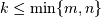
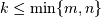
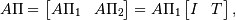
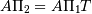
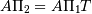
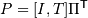
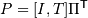

Table Of Contents
Previous topic
Next topic
Interpolative matrix decomposition (scipy.linalg.interpolative)¶
New in version 0.13.
An interpolative decomposition (ID) of a matrix  of rank  is a
factorization
of rank  is a
factorization

where ![\Pi = [\Pi_{1}, \Pi_{2}]](_images/math/291cbf4e65281ee63b76ecb97f5fc038df966462.png) is a permutation matrix with
is a permutation matrix with
 , i.e., . This can equivalently be written as
, i.e., . This can equivalently be written as  ,
where
,
where  and 
are the skeleton and interpolation matrices, respectively.
and 
are the skeleton and interpolation matrices, respectively.
If does not have exact rank  , then there exists an
approximation in the form of an ID such that , where
is on the order of the -th largest singular value of . Note that is the best possible error for a rank- approximation
and, in fact, is achieved by the singular value decomposition (SVD)
, where and have orthonormal columns
and is diagonal with nonnegative entries. The principal
advantages of using an ID over an SVD are that:
, then there exists an
approximation in the form of an ID such that , where
is on the order of the -th largest singular value of . Note that is the best possible error for a rank- approximation
and, in fact, is achieved by the singular value decomposition (SVD)
, where and have orthonormal columns
and is diagonal with nonnegative entries. The principal
advantages of using an ID over an SVD are that:
- it is cheaper to construct;
- it preserves the structure of ; and
- it is more efficient to compute with in light of the identity submatrix of .
Routines¶
Main functionality:
| interp_decomp(A, eps_or_k[, rand]) | Compute ID of a matrix. |
| reconstruct_matrix_from_id(B, idx, proj) | Reconstruct matrix from its ID. |
| reconstruct_interp_matrix(idx, proj) | Reconstruct interpolation matrix from ID. |
| reconstruct_skel_matrix(A, k, idx) | Reconstruct skeleton matrix from ID. |
| id_to_svd(B, idx, proj) | Convert ID to SVD. |
| svd(A, eps_or_k[, rand]) | Compute SVD of a matrix via an ID. |
| estimate_spectral_norm(A[, its]) | Estimate spectral norm of a matrix by the randomized power method. |
| estimate_spectral_norm_diff(A, B[, its]) | Estimate spectral norm of the difference of two matrices by the randomized power method. |
| estimate_rank(A, eps) | Estimate matrix rank to a specified relative precision using randomized methods. |
Support functions:
| seed([seed]) | Seed the internal random number generator used in this ID package. |
| rand(*shape) | Generate standard uniform pseudorandom numbers via a very efficient lagged |
References¶
This module uses the ID software package [R294] by Martinsson, Rokhlin, Shkolnisky, and Tygert, which is a Fortran library for computing IDs using various algorithms, including the rank-revealing QR approach of [R295] and the more recent randomized methods described in [R296], [R297], and [R298]. This module exposes its functionality in a way convenient for Python users. Note that this module does not add any functionality beyond that of organizing a simpler and more consistent interface.
We advise the user to consult also the documentation for the ID package.
| [R294] | P.G. Martinsson, V. Rokhlin, Y. Shkolnisky, M. Tygert. “ID: a software package for low-rank approximation of matrices via interpolative decompositions, version 0.2.” http://cims.nyu.edu/~tygert/id_doc.pdf. |
| [R295] | H. Cheng, Z. Gimbutas, P.G. Martinsson, V. Rokhlin. “On the compression of low rank matrices.” SIAM J. Sci. Comput. 26 (4): 1389–1404, 2005. doi:10.1137/030602678. |
| [R296] | E. Liberty, F. Woolfe, P.G. Martinsson, V. Rokhlin, M. Tygert. “Randomized algorithms for the low-rank approximation of matrices.” Proc. Natl. Acad. Sci. U.S.A. 104 (51): 20167–20172, 2007. doi:10.1073/pnas.0709640104. |
| [R297] | P.G. Martinsson, V. Rokhlin, M. Tygert. “A randomized algorithm for the decomposition of matrices.” Appl. Comput. Harmon. Anal. 30 (1): 47–68, 2011. doi:10.1016/j.acha.2010.02.003. |
| [R298] | F. Woolfe, E. Liberty, V. Rokhlin, M. Tygert. “A fast randomized algorithm for the approximation of matrices.” Appl. Comput. Harmon. Anal. 25 (3): 335–366, 2008. doi:10.1016/j.acha.2007.12.002. |
Tutorial¶
Initializing¶
The first step is to import scipy.linalg.interpolative by issuing the command:
>>> import scipy.linalg.interpolative as sli
Now let’s build a matrix. For this, we consider a Hilbert matrix, which is well know to have low rank:
>>> from scipy.linalg import hilbert
>>> n = 1000
>>> A = hilbert(n)
We can also do this explicitly via:
>>> import numpy as np
>>> n = 1000
>>> A = np.empty((n, n), order='F')
>>> for j in range(n):
>>> for i in range(m):
>>> A[i,j] = 1. / (i + j + 1)
Note the use of the flag order='F' in numpy.empty. This instantiates the matrix in Fortran-contiguous order and is important for avoiding data copying when passing to the backend.
We then define multiplication routines for the matrix by regarding it as a scipy.sparse.linalg.LinearOperator:
>>> from scipy.sparse.linalg import aslinearoperator
>>> L = aslinearoperator(A)
This automatically sets up methods describing the action of the matrix and its adjoint on a vector.
Computing an ID¶
We have several choices of algorithm to compute an ID. These fall largely according to two dichotomies:
- how the matrix is represented, i.e., via its entries or via its action on a vector; and
- whether to approximate it to a fixed relative precision or to a fixed rank.
We step through each choice in turn below.
In all cases, the ID is represented by three parameters:
- a rank k;
- an index array idx; and
- interpolation coefficients proj.
The ID is specified by the relation np.dot(A[:,idx[:k]], proj) == A[:,idx[k:]].
From matrix entries¶
We first consider a matrix given in terms of its entries.
To compute an ID to a fixed precision, type:
>>> k, idx, proj = sli.interp_decomp(A, eps)
where eps < 1 is the desired precision.
To compute an ID to a fixed rank, use:
>>> idx, proj = sli.interp_decomp(A, k)
where k >= 1 is the desired rank.
Both algorithms use random sampling and are usually faster than the corresponding older, deterministic algorithms, which can be accessed via the commands:
>>> k, idx, proj = sli.interp_decomp(A, eps, rand=False)
and:
>>> idx, proj = sli.interp_decomp(A, k, rand=False)
respectively.
From matrix action¶
Now consider a matrix given in terms of its action on a vector as a scipy.sparse.linalg.LinearOperator.
To compute an ID to a fixed precision, type:
>>> k, idx, proj = sli.interp_decomp(L, eps)
To compute an ID to a fixed rank, use:
>>> idx, proj = sli.interp_decomp(L, k)
These algorithms are randomized.
Reconstructing an ID¶
The ID routines above do not output the skeleton and interpolation matrices explicitly but instead return the relevant information in a more compact (and sometimes more useful) form. To build these matrices, write:
>>> B = sli.reconstruct_skel_matrix(A, k, idx)
for the skeleton matrix and:
>>> P = sli.reconstruct_interp_matrix(idx, proj)
for the interpolation matrix. The ID approximation can then be computed as:
>>> C = np.dot(B, P)
This can also be constructed directly using:
>>> C = sli.reconstruct_matrix_from_id(B, idx, proj)
without having to first compute P.
Alternatively, this can be done explicitly as well using:
>>> B = A[:,idx[:k]]
>>> P = np.hstack([np.eye(k), proj])[:,np.argsort(idx)]
>>> C = np.dot(B, P)
Computing an SVD¶
An ID can be converted to an SVD via the command:
>>> U, S, V = sli.id_to_svd(B, idx, proj)
The SVD approximation is then:
>>> C = np.dot(U, np.dot(np.diag(S), np.dot(V.conj().T)))
The SVD can also be computed “fresh” by combining both the ID and conversion steps into one command. Following the various ID algorithms above, there are correspondingly various SVD algorithms that one can employ.
From matrix entries¶
We consider first SVD algorithms for a matrix given in terms of its entries.
To compute an SVD to a fixed precision, type:
>>> U, S, V = sli.svd(A, eps)
To compute an SVD to a fixed rank, use:
>>> U, S, V = sli.svd(A, k)
Both algorithms use random sampling; for the determinstic versions, issue the keyword rand=False as above.
From matrix action¶
Now consider a matrix given in terms of its action on a vector.
To compute an SVD to a fixed precision, type:
>>> U, S, V = sli.svd(L, eps)
To compute an SVD to a fixed rank, use:
>>> U, S, V = sli.svd(L, k)
Utility routines¶
Several utility routines are also available.
To estimate the spectral norm of a matrix, use:
>>> snorm = sli.estimate_spectral_norm(A)
This algorithm is based on the randomized power method and thus requires only matrix-vector products. The number of iterations to take can be set using the keyword its (default: its=20). The matrix is interpreted as a scipy.sparse.linalg.LinearOperator, but it is also valid to supply it as a numpy.ndarray, in which case it is trivially converted using scipy.sparse.linalg.aslinearoperator.
The same algorithm can also estimate the spectral norm of the difference of two matrices A1 and A2 as follows:
>>> diff = sli.estimate_spectral_norm_diff(A1, A2)
This is often useful for checking the accuracy of a matrix approximation.
Some routines in scipy.linalg.interpolative require estimating the rank of a matrix as well. This can be done with either:
>>> k = sli.estimate_rank(A, eps)
or:
>>> k = sli.estimate_rank(L, eps)
depending on the representation. The parameter eps controls the definition of the numerical rank.
Finally, the random number generation required for all randomized routines can be controlled via scipy.linalg.interpolative.seed. To reset the seed values to their original values, use:
>>> sli.seed('default')
To specify the seed values, use:
>>> sli.seed(s)
where s must be an integer or array of 55 floats. If an integer, the array of floats is obtained by using np.random.rand with the given integer seed.
To simply generate some random numbers, type:
>>> sli.rand(n)
where n is the number of random numbers to generate.
Remarks¶
The above functions all automatically detect the appropriate interface and work with both real and complex data types, passing input arguments to the proper backend routine.